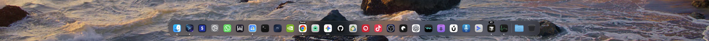
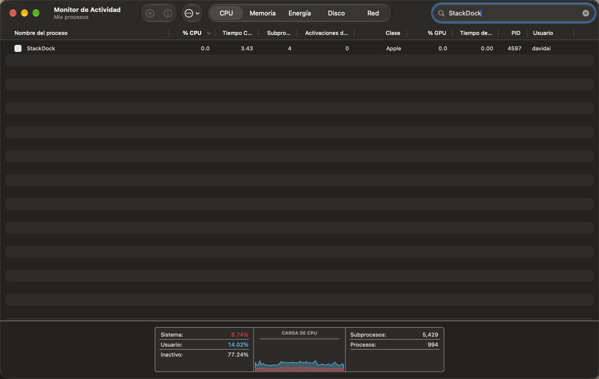

Stop fighting dead screen edges on vertical and multi-monitor setups. Control 2, 3, or 4+ displays, summon Docks instantly with ⌥+D, split Chrome profiles into labeled icons, and teleport windows with Shift+Click — all in one 18.2 MB native app.
One-time payment • Up to 3 Macs • $0/mo forever • macOS 13 Ventura to Tahoe
Competing Dock replacements record live video streams of your windows 24/7—draining up to 240 MB of RAM and triggering scary privacy prompts. StackDock runs strictly on native macOS kernel events.
Universal Native Swift Binary
ScreenCaptureKit Video Loops
On stacked monitors, macOS traps your Dock on the bottom screen because pushing your mouse down crosses into the lower display. Press ⌥+D (or F12) to summon or hide crisp frosted Docks across 2, 3, or 4+ screens on command.
Running Work, Trading, and Personal Chrome windows? StackDock automatically uncombines them into individual labeled Dock icons. Focus one profile, or close it with ⌥⌘+Click / context menu — without quitting all of Chrome.
Pull any app from your small bottom monitor straight up to your main display—proportionally resized to fit—just by Shift+Clicking or double-clicking its Dock icon.
Option+Click the menu bar icon to kill or wake all secondary Docks in 0.1s. ⌥⌘+Click any icon on Monitor 1, 2, 3, or 4 to quit apps, choose between mirrored Docks or per-monitor window isolation.
Recorded on Dual Stacked Setup (macOS Apple Silicon)
15s Real Demo: ⌥+D + Chrome Split + Shift+Click Teleport
Run Scripts/record_product_demo.sh to generate ./public/media/stackdock-demo.mp4

Uncombined Chrome Profiles
Separate Chrome profiles as dock icons with pill badges. Close one via ⌥⌘+Click or context menu.

Activity Monitor Proof
Real idle telemetry: 0.0% CPU. Carbon hotkeys, no polling loops.
| Capability | StackDock (BLACK EYE) | Dockish | Better Dock Pro | DockLock Plus |
|---|---|---|---|---|
| Price | $9.99 $14.99 | $9.99 | $59/yr or $159 | $39.99 |
| Simultaneous Docks (2–4+ Screens) | ✓ Yes | ✓ Yes | ✓ Yes | ✕ Locks 1 Dock only |
| Instant Hotkey Summon (⌥+D) | ✓ Instant (0% CPU) | ✕ Mouse edge only | Partial | ✕ No |
| Split Chrome Profiles w/ Badges | ✓ Yes | ✕ No | ✓ Yes | ✕ No |
| Shift+Click Window Teleporter | ✓ Yes (Auto-Scales) | ✕ No | ✕ No | ✕ No |
| Screen Recording Permission | NEVER REQUIRED | Not required | Required (Invasive) | Not required |
| Idle CPU / RAM Footprint | 0.0% / ~18 MB | ~0.3% / 35 MB | 1–3% / 238 MB | ~0.2% / 26 MB |
Pay once, own forever. Zero subscriptions, zero telemetry.
SDOCK-...) via emailWe deliberately excluded live video thumbnails (ScreenCaptureKit) because recording your windows nonstop eats 200+ MB of RAM. StackDock reads window titles and coordinates via lightweight macOS Accessibility APIs only when clicked—keeping idle CPU at an authentic 0.0%.
Yes—StackDock was born specifically for this setup. Keep your native Apple Dock on the small bottom screen while StackDock anchors a synchronized Dock on your top main monitor, toggled anytime with ⌥+D.
Right after Stripe checkout, you receive your SDOCK-... license key via email. StackDock verifies your key locally in 0.1ms using Apple CryptoKit—meaning zero background servers, zero logins, and 100% offline reliability across up to 3 Macs.